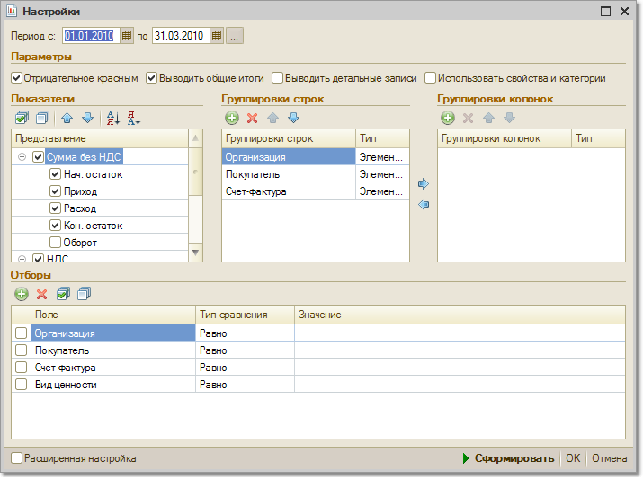

Меню Отчеты > НДС > Ведомость по НДС начисленному
Отчет позволяет проанализировать данные, на основании которых формируется декларация по НДС.

Параметры формирования
Отборы
Блок "Отборы" предназначен для настройки параметров отбора данных в отчет.
Чтобы добавить вид отбора, щелкните кнопку "Добавить
" и выберите поле, по которому будет производиться отбор. Затем задайте Вид сравнения, который определит область поиска заданного значения. Значение отбора выбирается из соответствующего справочника. Значением отбора может быть как отдельный элемент, так и группа и список выбранных элементов.Значение отбора должно согласоваться с видом сравнения!
Вид отбора активен, только если в строке вида отбора установлен флаг.
По кнопке "Сформировать" будет сформирован отчет с заданными параметрами в основном окне "Обороты счета".
Кнопки сохранения и восстановления значений позволяют сохранять пользовательские настройки отчета, чтобы использовать их в дальнейшем.